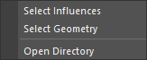

スキンウェイトのインポート、エクスポートを行うツールです。
スキンウェイトをファイルに保存し、別のジオメトリにインポートすることができます。 ただし、すでにバインドされているジオメトリにはインポートできません。
専用のメニューか、以下のコマンドでツールを起動します。
import faketools.tools.skinWeights_import_export_ui
faketools.tools.skinWeights_import_export_ui.show_ui()
一時的にスキンウエイトを保存する場合の Quick Mode と、ファイルに保存する場合の Advanced Mode があります。
Export ボタンを押して、スキンウエイトを保存します。Export ボタンを押して、スキンウエイトを保存します。Import ボタンを押して、保存したスキンウエイトを読み込みます。Import ボタンを押して、保存したスキンウエイトを読み込みます。以下の場合は、インポートされません。
インポート時のジオメトリの選択方法

Quick Mode の各ボタン上と、Advanced Mode の ツリービュー上で右クリックすると、コンテキストメニューが表示されます。

Advanced Mode でエクスポートする際のファイルフォーマットを選択します。ボタンを選択すると、フォーマットが切り替わります。
ファイルを バイナリ形式 (pickle) ( 左 ) で保存するか、テキスト形式 (json) ( 右 ) で保存するかを選択します。